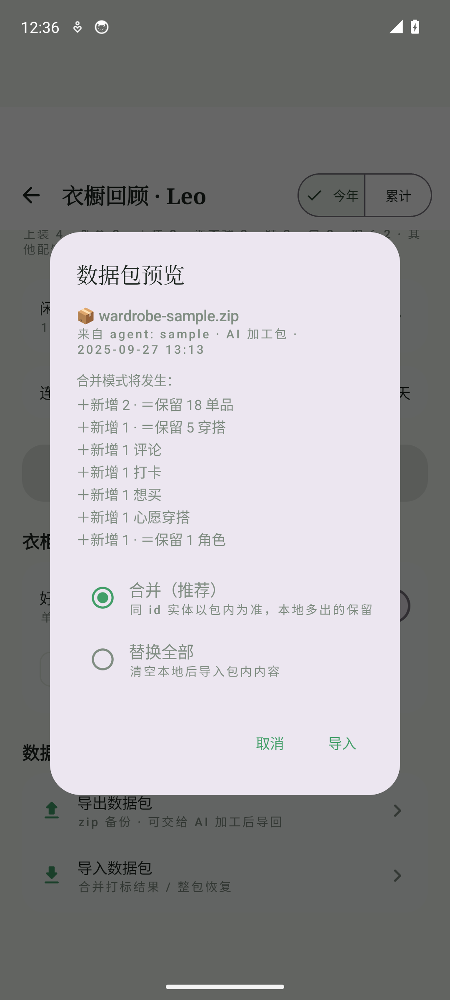
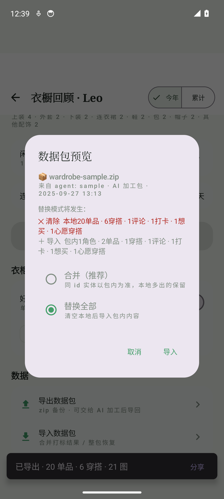
对两应用新增的数据包功能（回顾页「数据」小节 + 导入/导出全流程对话框）做实机截图走查：16 个屏状态逐屏视觉评审、9 项交互实测验证。结论：链路与信息架构达标，核心风险集中在「替换」这一不可逆操作的危险态表达（P0×2）；另两条视觉模型的 P0 判定（符号豆腐块、导出无反馈）经像素级复核与 dump 断言推翻。修复建议拆为 it-025 交互加固迭代，两张改版线框给全变更点。
emulator-5554 实机（debug 构建含 it-024/it-012），16 个屏状态含过程态与演示态
每屏一 prompt 对标 Airbnb/Things/Linear 严格评审，P0/P1/P2 分级
uiautomator dump 断言 + run-as 落盘核对 + 导出包 validator 回环，视觉结论须实测实锤
| # | 问题 | 涉及页面 | 级别 | 修法（对应线框） |
|---|---|---|---|---|
| C1 | 差异/明细行符号（＋↻＝/✗✓）与正文同色同重，扫读分层弱 | R2 · R5 · E1 | P1 | 符号 span 着色加粗（＋绿 ↻琥珀 ＝灰；✗红 ✓绿） |
| C2 | 替换模式危险态表达不足：单选同权 + 红色摘要动线割裂 + 按钮不随模式 | R3 · E1（同构对话框） | P0 | 模式胶囊 + 单选警示红 + 按钮随模式（线框 wf-import-replace ①③④） |
| C3 | 替换明细口径不对称：删除侧缺图片数 | R3 · R4 | P0 | 删除/导入两段对称各带图数（wf-import-replace ② / wf-replace-confirm ①） |
| C4 | 「建议先导出备份」纯文字不可执行 | R4 | P1 | 升为主按钮直达 SAF 保存（wf-replace-confirm ②） |
| C5 | 导入入口副标题对覆盖型操作零暗示 | R1 · E1 | P2 | 文案补「（覆盖需确认）」类风险词 |
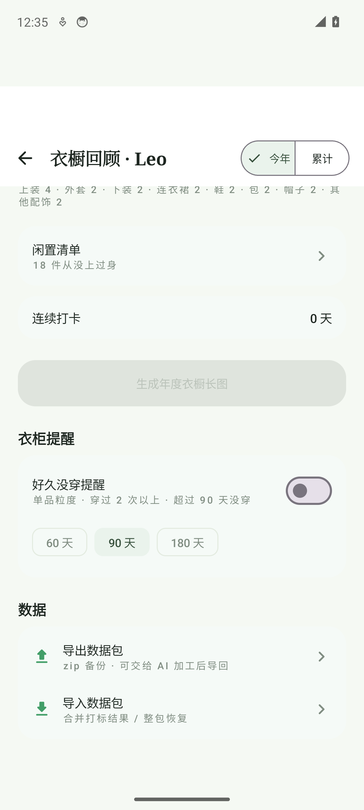
入口融入设置卡区、与「衣柜提醒」同构，可达性合格；风险在导入副标题对覆盖型操作的暗示不足。
信息架构达标：来源/差异/模式三段式，AI 加工包识别正确；差异行的扫读分层可再强化。
替换是全流程唯一不可逆操作，当前与「合并」视觉完全同权——危险态表达不足是本次评审最高优先级问题。
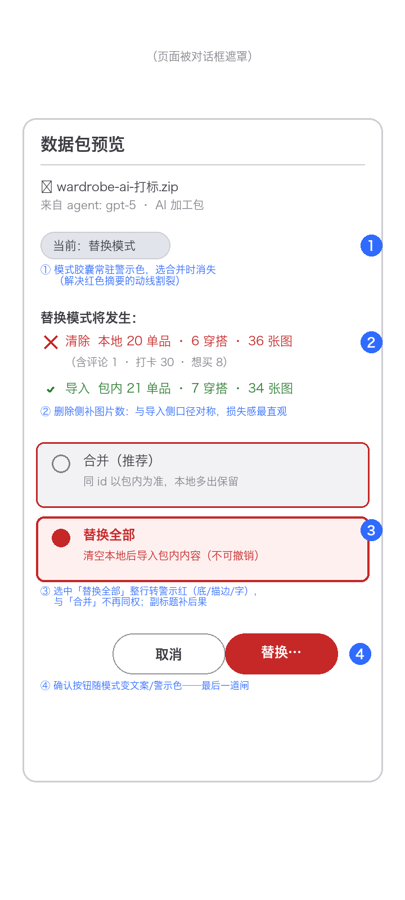
标题、具体数字与不可撤销提醒都在，但删除明细口径不对称、备份建议只给文字不给动作。
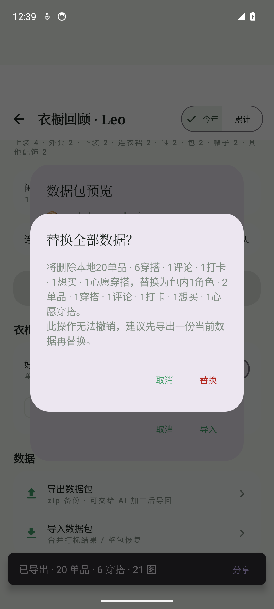
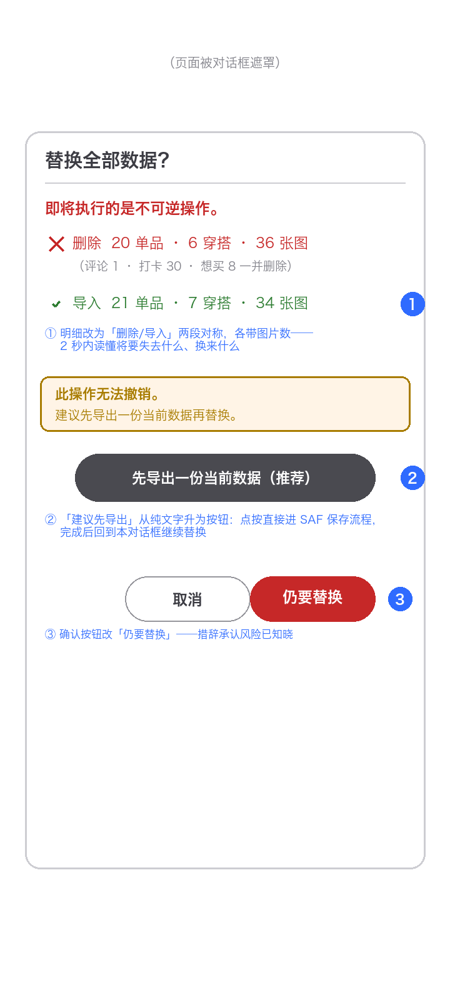
拒绝理由一句话可懂、零改动承诺到位；两条视觉模型的 P0 判定经实测复核撤销（详见附录）。
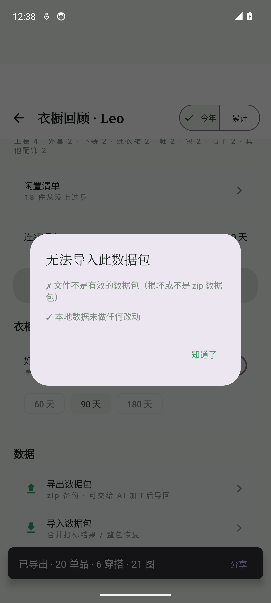
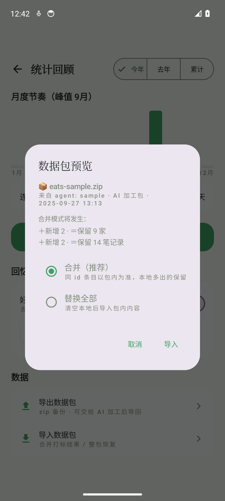
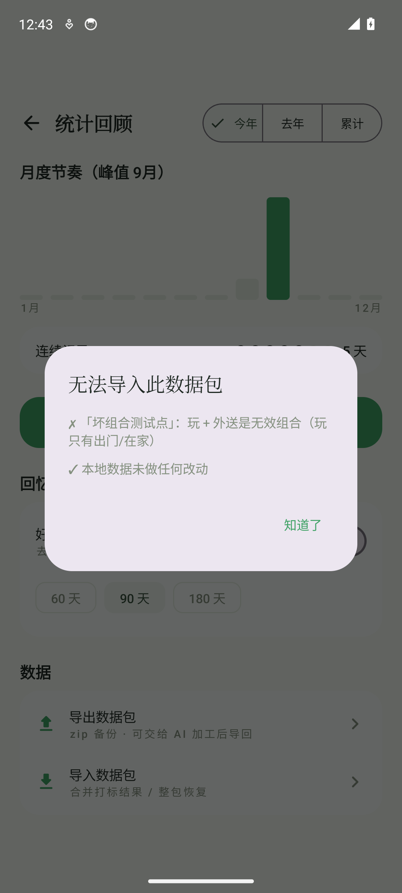
与衣橱同构实现，跨应用一致性良好（间距/卡片/单选布局一致）；差异行符号问题同 R2。
PLAY+TAKEOUT 校验拒绝带店名级原因、指向明确；演示模式置灰与说明行两应用一致。
按 spec-driven 流程拆为一次交互加固迭代；O1/O2/O3 对应两张改版线框的全部变更点。
| # | 方案内容 | 对应页面 |
|---|---|---|
| wardrobe + eats / it-025 · 数据包交互加固（建议，待 Leo 确认） | ||
| O1 | 替换危险态三件套：模式胶囊 + 单选警示红 + 确认按钮随模式变色变文案 | R3 · E1 |
| O2 | 替换明细对称并补图片数（预检服务已可算 referencedImages） | R3 · R4 |
| O3 | 二次确认升版：先导出备份按钮 + 「仍要替换」措辞 | R4 |
| O4 | 符号分层着色（＋↻＝✗✓ span 色，两应用同一套） | R2 · R5 · E1 |
| O5 | 入口副标题风险暗示文案 | R1 · E1 |
| 实测项 | 结论 |
|---|---|
| 合并导入（agent 样例包） | PASS：18→20 单品、5→6 穿搭落盘，图片归一 uuid.webp（run-as 核对） |
| 导出 → validator 回环 | PASS：2.29MB/21 图导出包拉回本机，validate.py PASS（23 WARN 均历史短 id） |
| 跨 app 拒绝（吃啥包→衣橱） | PASS：「这是『吃啥』的数据包」+ 零改动承诺 |
| 非 zip 拒绝 | PASS：坏文件给「不是有效的数据包」 |
| 替换 + 二次确认 | PASS：摘要切换/确认/即时生效（标题与品类带刷新、旧图片文件回收） |
| 备份恢复（导出包替换导回） | PASS：persons/items/outfits/wearLogs 与快照一致 |
| 导出 snackbar 反馈 | PASS：SAVE 后 4 次 dump 断言 6s+ 持续显示（撤销视觉「无反馈」P0） |
| ✗/✓ 符号渲染 | PASS：放大裁剪像素复核清晰（撤销视觉「豆腐块」P0） |
| PLAY+TAKEOUT 拒绝 / eats 合并导入 | PASS：店名级原因；9→11 家 14→16 笔 |
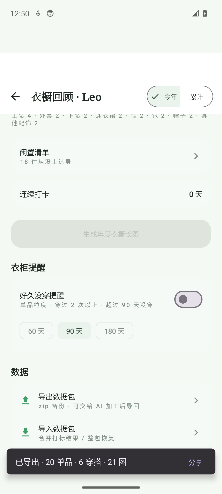
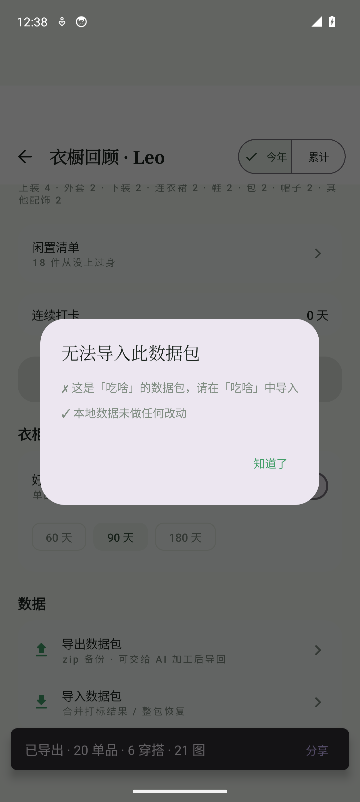